Maintenance EN-GB Home
- STANDARD SAW
- LUBRICANT COMPARISON TABLE
- MN0001 EMERGENCY CIRCUIT TEST
- MN0002 MONTHLY MAINTENANCE VACUUM PUMP
- MN0003 TEST OPERATION LIGHT SIGNAL
- MN0004 LINEAR GUIDES GRASSING MOVE SYSTEM
- MN0005 GREASING BEARING SPIRAL AXE Z
- MN0006 GREASING BEARINGS TRANSMISSION SHAFT BRIDGE AXIS Y
- MN0007 CHECK GREASING SYSTEM OF AUTOMATIC GREASING
- MN0008 GRASING OF THE TILTING BENCH PIVOTS
- MN0009 GRASSING OF SWIVEL ARM CONSOLE
- MN0010 CHECK PIPES AND FITTINGS HYDRAULIC SYSTEM
- MN0011 OIL CHANGE HYDRAULIC CONTROL UNIT
- MN0012 CLEAN FILTERS ELECTRICAL CABINET
- MN0013 MAINTENANCE COMPRESSED AIR INTAKE GROUP
- MN0014 SPINDLE BEARINGS
- MN0041 GREASING LINEAR GUIDES SPINDLE LATERAL TOOL PLUS
- MN0042 PNEUMATIC SYSTEM FILTER CLEANING
- MN0043 VERIFY SEAL ROTATING
- WATERJET
- MN0015 CHECK PIPES AND FITTINGS OF HIGH-PRESSURE SYSTEM
- MN0016 CHECK OF THE BATH CLEANING STATUS
- MN0017 REPAIR THE CHECK VALVES AND THE GATES FOR THE LOW PRESSURE
- MN0018 REPAIR THE HIGH PRESSURE CYLINDER
- MN0019 REPLACE THE CARTRIDGE OF THE HIGH PRESSURE SEAL ELEMENT
- MN0020 REPLACE THE SHUTTER GROUP FOR HIGH PRESSURE
- MN0021 REPLACE THE DAMPER FOR LOW PRESSURE
- MN0022 INVERT THE HIGH-PRESSURE CYLINDER
- MN0023 REPLACE THE HIGH PRESSURE CYLINDER
- MN0024 REPLACE THE CHECK VALVE GROUP
- MN0025 REPLACE THE SEAL ELEMENT HOUSING GROUP
- MN0026 REPLACE THE OUTPUT ADAPTER
- MN0027
- MN0028 REPAIR OF CENTRAL HYDRAULIC SECTION
- MN0029 REPAIR THE PURGE VALVE
- MN0030 LUBRICATION CHECK AUTOMATIC GREASING SYSTEM
- MN0031 REPLACE THE VALVE BODY
- MN0032 CLEAN THE AIR COOLER
- MN0033
- MN0034 REPLACE WATER FILTER
- MN0035 CHECK THE WATER QUALITY
- MN0036 REPLACE THE HYDRAULIC FILTER ELEMENT
- MN0037 REPLACE THE HYDRAULIC FLUID
- MN0038 LUBRICATE THE BEARINGS OF THE MAIN MOTOR
- MN0039 CLEANING FILTERS AIR INTAKES ELECTRICAL CABINET
- MN0040 MAINTENANCE AIR COMPRESSOR INFEED GROUP
- BFT PUMP
- DONATONI PUMP
- HYPERTHERM PUMP
- SAFETY INSTRUCTIONS
STANDARD SAW
Standard maintenance list for a JET625 saw

LUBRICANT COMPARISON TABLE
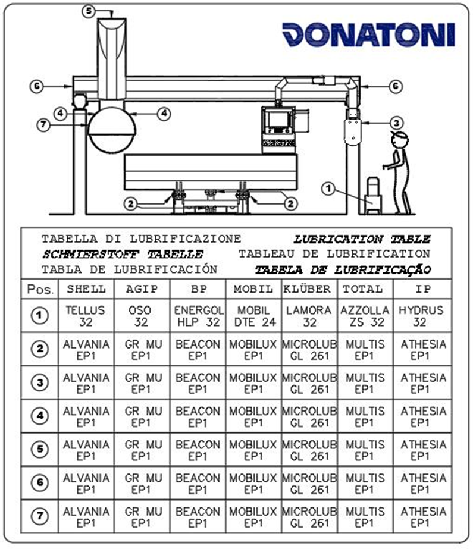
MN0001 EMERGENCY CIRCUIT TEST
⚠️Before proceeding, carefully read the | |
⏲️ Interval: every 200 working hours | 🎚️ Complexity operation: ⭐☆☆☆☆ |
🧑🏭 Authorized figure: Machine operator | 🧤 Expected DPI:  |
Video
Procedure
Machine on and ready for operation in a way to access the dangerous zone press the emergency stop button and verify:
That on the monitor of the control panel the status of 'EMERGENCY ACTIVE' is displayed
Let the red sector of the light signal located on the control panel light up.
That performing any movement of one of the machine's axes through the maintained action levers present on the control panel no movement occurs inside the machine.
Restore the operation of the machine and verify:
That on the monitor of the control panel disappears the indication of 'EMERGENCY ACTIVE'.
That the red sector of the light signal located on the control panel turns off.
That performing any movement of one of the machine axes via the maintained action levers present on the control panel causes the corresponding movement inside the machine.
MN0002 MONTHLY MAINTENANCE VACUUM PUMP
⚠️Before proceeding, carefully read the | |
⏲️ Interval: every week; every month | 🎚️ Complexity operation: ⭐☆☆☆☆ |
🧑🏭 Authorized figure: Machine operator | 🧤 Expected DPI:  |
Video
Procedure
The maintenance in good condition of the vacuum pump depends on the level of cleanliness of the water of the hydraulic system. It is the responsibility of the buyer to ensure that the characteristics of the water used are compliant to what is foreseen by the use and maintenance manual of the vacuum pump manufacturer.
Every week:
Verify that the water level in the tank reaches the level of the overflow drain pipe.
In case of sporadic use of the vacuum system, operate the vacuum pump weekly through the vacuum activation command (refer to section B of the 'Instructions for use' manual accompanying this manual).
Every month:
Perform an accurate cleaning of the tank removing any sediment deposits accumulated on the bottom
Advanced Instructions
For more detailed instructions on vacuum pump maintenance, refer to the use and maintenance manual.
120113044828_Manuale_Vuoto_Italiano.pdf
MN0003 TEST OPERATION LIGHT SIGNAL
⚠️Before proceeding, carefully read the | |
⏲️ Interval: | 🎚️ Complexity operation: ⭐☆☆☆☆ |
🧑🏭 Authorized figure: Machine operator | 🧤 Expected DPI:  |
Images
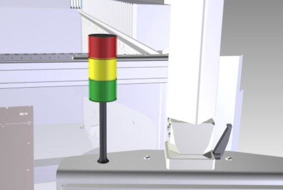
Procedure
Test orange section of the light signal:
Prepare the machine for operation in a way to access the dangerous area as described in chapter - METHOD OF ACCESS TO THE DANGEROUS AREA and verify the ignition of the orange sector of the light signal in flashing mode.
Prepare the machine for operation in 'slow mode' (refer to section B of the 'Instructions for use' manual associated with this manual) and verify the ignition of the orange sector of the light signal in fixed mode.
Test green section of the light signal:
Prepare the machine for operation as described in chapter - OPERATION MODE, make any movement of one of the machine axes through the levers with maintained action present on the control panel (refer to section B of the 'Instructions for use' manual paired with this manual) and verify the lighting of the green sector of the luminous signal in flashing mode during movement
Test red section of the light signal:
press the emergency stop button present on the control panel and verify the lighting on of the red sector of the light signal in flashing mode.
NOTE: to restore the machine's operation proceed as described in the manual
MN0004 LINEAR GUIDES GRASSING MOVE SYSTEM
⚠️Before proceeding, carefully read the | |
⏲️ Interval: every 300 working hours | 🎚️ Complexity operation: ⭐☆☆☆☆ |
🧑🏭 Authorized figure: Machine operator | 🧤 Expected DPI:  |
Video
Images

Procedure
At least every 300 working hours, provide lubrication to the linear guides of the MOVE system with 1cm3 of grease through the nozzles shown in the figure.

MN0005 GREASING BEARING SPIRAL AXE Z
⚠️Before proceeding, carefully read the | |
⏲️ Interval: every 300 working hours | 🎚️ Complexity operation: ⭐☆☆☆☆ |
🧑🏭 Authorized figure: Machine operator | 🧤 Expected DPI:  |
Images

Procedure
At least every 300 hours of work, provide via special gun to grease the Z axis worm gear bearing with 1 cm3 of grease through the nozzle shown in the figure.
The lubrication nozzle is located on the right side of the tube below the frame in the figure and is positioned as indicated and highlighted in the image.
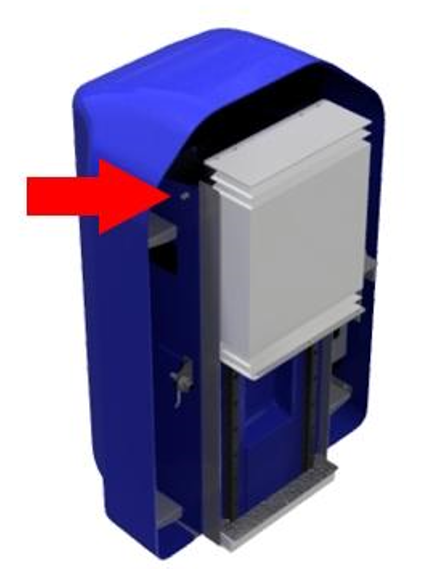
MN0006 GREASING BEARINGS TRANSMISSION SHAFT BRIDGE AXIS Y
⚠️Before proceeding, carefully read the | |
⏲️ Interval: every 300 working hours | 🎚️ Complexity operation: ⭐☆☆☆☆ |
🧑🏭 Authorized figure: Machine operator | 🧤 Expected DPI:  |
Video
Image

Procedure
At least every 300 working hours, provide to grease the bearings of the transmission shaft Y axis with 1 cm3 of grease through the nozzles shown in the figure using a suitable gun.

MN0007 CHECK GREASING SYSTEM OF AUTOMATIC GREASING
⚠️Before proceeding, carefully read the | |
⏲️ Interval: every 300 working hours | 🎚️ Complexity operation: ⭐☆☆☆☆ |
🧑🏭 Authorized figure: Machine operator | 🧤 Expected DPI:  |
Images

Procedure
The automatic greasing system consists of an automatic control unit that provides greasing to the connected utilities according to the programmed timing.

The tank must be replenished with the necessary grease without it exceeding the maximum indicated level.
At least every 500 hours of working, execute the check of the grease level in the tank and when necessary, proceed with the topping up utilizing the correct type of grease.
Note. A video alarm warns the operator when the grease level has reached the minimum level in the tank and therefore topping up is necessary.
Manual specific of the device
MN0008 GRASING OF THE TILTING BENCH PIVOTS
⚠️Before proceeding, carefully read the | |
⏲️ Interval: every 6 months | 🎚️ Complexity operation: ⭐☆☆☆☆ |
🧑🏭 Authorized figure: Machine operator | 🧤 Expected DPI:  |
Video
Images

Procedure
At least every 6 months provide through suitable gun to grease the joints of the tilting bench with 1cm3 of grease through the nozzles shown in the figure.
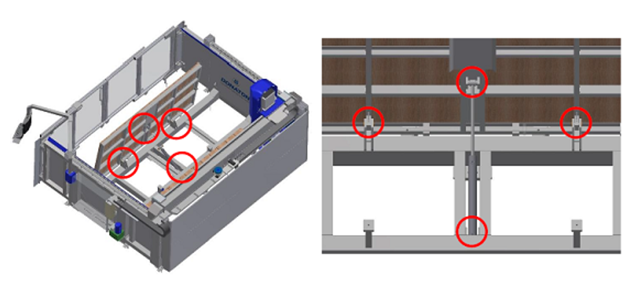
MN0009 GRASSING OF SWIVEL ARM CONSOLE
⚠️Before proceeding, carefully read the | |
⏲️ Interval: | 🎚️ Complexity operation: ⭐☆☆☆☆ |
🧑🏭 Authorized figure: Machine operator | 🧤 Expected DPI:  |
MN0010 CHECK PIPES AND FITTINGS HYDRAULIC SYSTEM
⚠️Before proceeding, carefully read the | |
⏲️ Interval: every year = 8760 h | 🎚️ Complexity operation: ⭐☆☆☆☆ |
🧑🏭 Authorized figure: Machine operator | 🧤 Expected DPI:  |
MN0011 OIL CHANGE HYDRAULIC CONTROL UNIT
⚠️Before proceeding, carefully read the | |
⏲️ Interval: every 2000 working hours | 🎚️ Complexity operation: ⭐☆☆☆☆ |
🧑🏭 Authorized figure: Machine operator | 🧤 Expected DPI:  |
Video
Images

Procedure
The oil change must be carried out normally at least every 2000 working hours, the replacement must be accompanied by a thorough cleaning of the tank.
The emptying occurs through the lower plug (pos B in figure) and the introduction of fluid into the tank must be done through a filter with 10 micron mesh through the loading plug (pos A in figure).

MN0012 CLEAN FILTERS ELECTRICAL CABINET
⚠️Before proceeding, carefully read the | |
⏲️ Interval: every 2000 working hours | 🎚️ Complexity operation: ⭐☆☆☆☆ |
🧑🏭 Authorized figure: Machine operator | 🧤 Expected DPI:  |
Procedure
Operations
Rotate the switch A to the position OFF. |  |
|---|---|
Open the D and E doors | 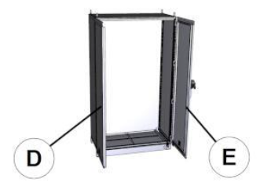 |
Remove the F protection and the G filter. | 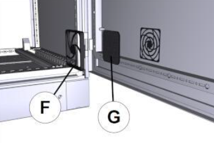 |
Clean the filter using an H compressed air jet. | 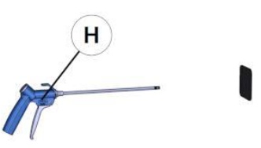 |
Restore by performing the reverse procedure |
MN0013 MAINTENANCE COMPRESSED AIR INTAKE GROUP
⚠️Before proceeding, carefully read the | |
⏲️ Interval: | 🎚️ Complexity operation: ⭐☆☆☆☆ |
🧑🏭 Authorized figure: Machine operator | 🧤 Expected DPI:  |
MN0014 SPINDLE BEARINGS
⚠️Before proceeding, carefully read the | |
⏲️ Interval: every 1550 working hours | 🎚️ Complexity operation: ⭐☆☆☆☆ |
🧑🏭 Authorized figure: Machine operator | 🧤 Expected DPI:  |
MN0041 GREASING LINEAR GUIDES SPINDLE LATERAL TOOL PLUS
⚠️Before proceeding, carefully read the | |
⏲️ Interval: every 300 working hours | 🎚️ Complexity operation: ⭐☆☆☆☆ |
🧑🏭 Authorized figure: Machine operator | 🧤 Expected DPI:  |
Video
Procedure
At least every 300 working hours, provide lubrication to the linear guides of the MOVE system with 1cm3 of grease through the nozzles shown in the figure.
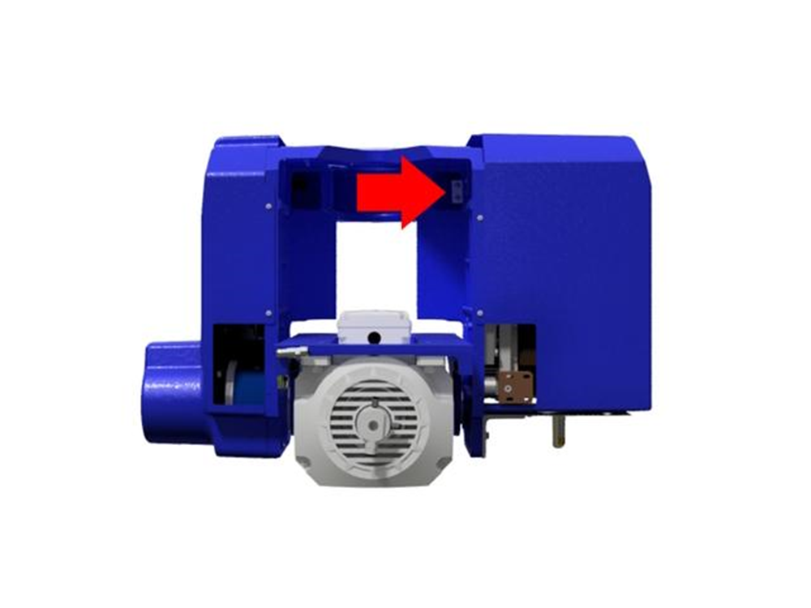
MN0042 PNEUMATIC SYSTEM FILTER CLEANING
⚠️Before proceeding, carefully read the | |
⏲️ Interval: every 2000 working hours | 🎚️ Complexity operation: ⭐☆☆☆☆ |
🧑🏭 Authorized figure: Machine operator | 🧤 Expected DPI:  |
Video
Instructions of safety specific of the maintenance
For the filter cleaning, before intervening, depressurize the system acting on the shutoff valve of the air group and lock it with a padlock.
(See manufacturer’s manual
Procedure
For the maintenance instructions regarding the compressed air group refer to the manufacturer's use and maintenance manual.
Before to execute maintenance operations close the shut-off valve and apply a padlock.

MN0043 VERIFY SEAL ROTATING
⚠️Before proceeding, carefully read the | |
⏲️ Interval: every 500 working hours | 🎚️ Complexity operation: ⭐☆☆☆☆ |
🧑🏭 Authorized figure: Machine operator | 🧤 Expected DPI:  |
Procedure
Verify that externally there are no signs of coolant liquid losses. In case of losses proceed with the replacement with the specific spare part.
Replacement
In case of replacement proceed as described below.
Unscrew the cap |  |
|---|---|
Insert in the central hole a 6mm Allen key. |  |
Retighten the rear cap. |  |
WATERJET
Space for maintenance operations accessible from the machine side for Waterjet-type machines.
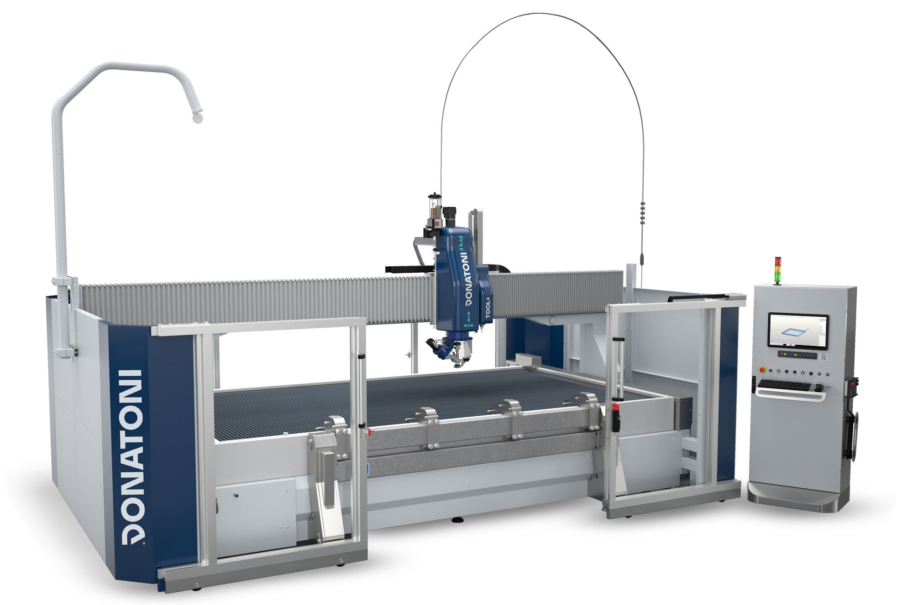
MN0015 CHECK PIPES AND FITTINGS OF HIGH-PRESSURE SYSTEM
⚠️Before proceeding, carefully read the | |
⏲️ Interval: every 1000 working hours | 🎚️ Operation complexity: ⭐☆☆☆☆ |
🧑🏭 Authorized figure: Machine operator | 🧤 Expected DPI:  |
Procedure
Position the machine in the center of the tub. Turn on the pump and check if there are leaks along the high pressure pipes.
In case of presence of leaks, turn off the pump, press the emergency mushroom, and proceed to eliminate the leak by tightening the fitting with the correct tightening torque.
35 Nm for the 1/4 inch fittings
70 Nm for 3/8"" fittings
So disable the emergency, enable the commands and try to turn on the pump to check for further leaks.
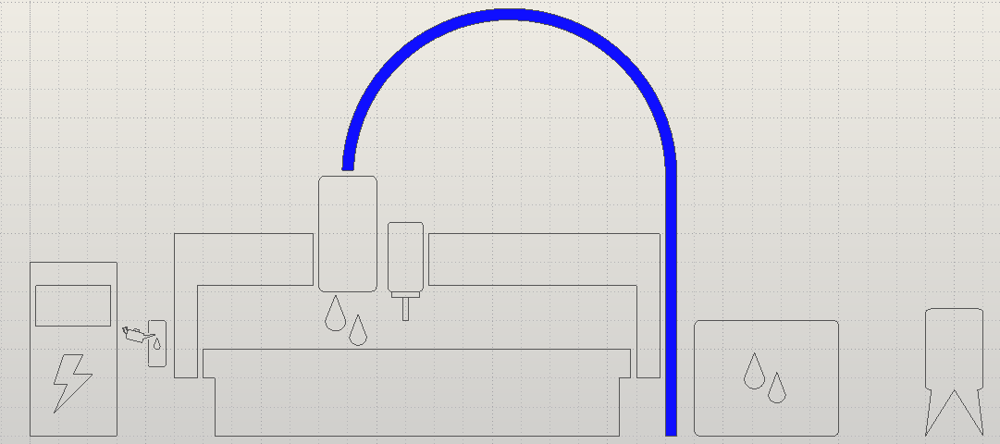
MN0016 CHECK OF THE BATH CLEANING STATUS
⚠️Before proceeding, carefully read the | |
⏲️ Interval: every 720 working hours | 🎚️ Operation complexity: ⭐☆☆☆☆ |
🧑🏭 Authorized figure: Machine Operator | 🧤 Expected DPI:  |
Procedure
Send the machine to parking and proceed to extract the blade carrier frame.
Open the rear tap and let out the water.
If the abrasive recovery tanks contain more than 20 cm of sand, it is advised the removal and emptying of the same.

MN0017 REPAIR THE CHECK VALVES AND THE GATES FOR THE LOW PRESSURE
⚠️Before proceeding, carefully read the | |
⏲️ Interval: every 500 working hours | 🎚️ Operation complexity: ⭐☆☆☆☆ |
🧑🏭 Authorized figure: Machine operator | 🧤 Expected DPI:  |
MN0018 REPAIR THE HIGH PRESSURE CYLINDER
⚠️Before proceeding, carefully read the | |
⏲️ Interval: every 500 working hours | 🎚️ Operation complexity: ⭐☆☆☆☆ |
🧑🏭 Authorized figure: Machine operator | 🧤 Expected DPI:  |
MN0019 REPLACE THE CARTRIDGE OF THE HIGH PRESSURE SEAL ELEMENT
⚠️Before proceeding, carefully read the | |
⏲️ Interval: every 500 working hours | 🎚️ Operation complexity: ⭐☆☆☆☆ |
🧑🏭 Authorized figure: Machine operator | 🧤 Expected DPI:  |
MN0020 REPLACE THE SHUTTER GROUP FOR HIGH PRESSURE
⚠️Before proceeding, carefully read the | |
⏲️ Interval: every 1000 working hours | 🎚️ Operation complexity: ⭐☆☆☆☆ |
🧑🏭 Authorized figure: Machine operator | 🧤 Expected DPI:  |
MN0021 REPLACE THE DAMPER FOR LOW PRESSURE
⚠️Before proceeding, carefully read the | |
⏲️ Interval: every 1000 working hours | 🎚️ Operation complexity: ⭐☆☆☆☆ |
🧑🏭 Authorized figure: Machine operator | 🧤 Expected DPI:  |
MN0022 INVERT THE HIGH-PRESSURE CYLINDER
⚠️Before proceeding, carefully read the | |
⏲️ Interval: every 1500 working hours | 🎚️ Operation complexity: ⭐☆☆☆☆ |
🧑🏭 Authorized figure: Machine operator | 🧤 Expected DPI:  |
MN0023 REPLACE THE HIGH PRESSURE CYLINDER
⚠️Before proceeding, carefully read the | |
⏲️ Interval: every 3000 working hours | 🎚️ Operation complexity: ⭐☆☆☆☆ |
🧑🏭 Authorized figure: Machine operator | 🧤 Expected DPI:  |
MN0024 REPLACE THE CHECK VALVE GROUP
⚠️Before proceeding, carefully read the | |
⏲️ Interval: every 3000 working hours | 🎚️ Operation complexity: ⭐☆☆☆☆ |
🧑🏭 Authorized figure: Machine operator | 🧤 Expected DPI:  |
MN0025 REPLACE THE SEAL ELEMENT HOUSING GROUP
⚠️Before proceeding, carefully read the | |
⏲️ Interval: every 6000 working hours | 🎚️ Operation complexity: ⭐☆☆☆☆ |
🧑🏭 Authorized figure: Machine operator | 🧤 Expected DPI:  |
MN0026 REPLACE THE OUTPUT ADAPTER
⚠️Before proceeding, carefully read the | |
⏲️ Interval: every 6000 working hours | 🎚️ Operation complexity: ⭐☆☆☆☆ |
🧑🏭 Authorized figure: Machine operator | 🧤 Expected DPI:  |
MN0027
⚠️Before proceeding, carefully read the | |
⏲️ Interval: | 🎚️ Operation complexity: ⭐☆☆☆☆ |
🧑🏭 Authorized figure: Machine operator | 🧤 Expected DPI:  |
MN0028 REPAIR OF CENTRAL HYDRAULIC SECTION
⚠️Before proceeding, carefully read the | |
⏲️ Interval: every 12000 working hours | 🎚️ Operation complexity: ⭐☆☆☆☆ |
🧑🏭 Authorized figure: Machine operator | 🧤 Expected DPI:  |
MN0029 REPAIR THE PURGE VALVE
⚠️Before proceeding, carefully read the | |
⏲️ Interval: every 1000 working hours | 🎚️ Operation complexity: ⭐☆☆☆☆ |
🧑🏭 Authorized figure: Machine operator | 🧤 Expected DPI:  |
Images


MN0030 LUBRICATION CHECK AUTOMATIC GREASING SYSTEM
⚠️Before proceeding, carefully read the | |
⏲️ Interval: every 450 working hours | 🎚️ Operation complexity: ⭐☆☆☆☆ |
🧑🏭 Authorized figure: Machine operator | 🧤 Expected DPI:  |
Procedure
The automatic greasing system consists of an automatic control unit that provides greasing to the connected utilities according to the programmed timing.
The tank must be replenished with the necessary grease without that it exceeds the maximum level indicated.
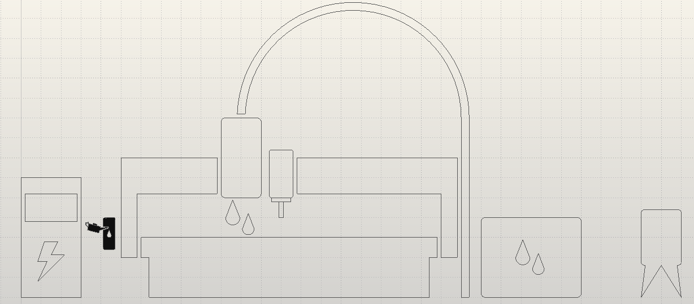
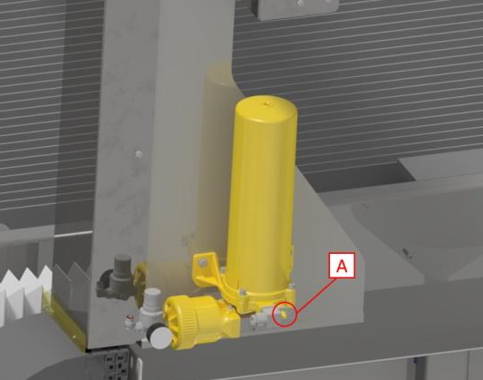
Note. A video alarm warns the operator when the grease level has reached the minimum level in the tank and therefore topping up is necessary.
MN0031 REPLACE THE VALVE BODY
⚠️Before proceeding, carefully read the | |
⏲️ Interval: every 3000 working hours | 🎚️ Operation complexity: ⭐☆☆☆☆ |
🧑🏭 Authorized figure: Machine operator | 🧤 Expected DPI:  |
MN0032 CLEAN THE AIR COOLER
⚠️Before proceeding, carefully read the | |
⏲️ Interval: every 1000 working hours | 🎚️ Operation complexity: ⭐☆☆☆☆ |
🧑🏭 Authorized figure: Machine operator | 🧤 Expected DPI:  |
MN0033
⚠️Before proceeding, carefully read the | |
⏲️ Interval: | 🎚️ Operation complexity: ⭐☆☆☆☆ |
🧑🏭 Authorized figure: Machine operator | 🧤 Expected DPI:  |
MN0034 REPLACE WATER FILTER
⚠️Before proceeding, carefully read the | |
⏲️ Interval: every 1000 working hours | 🎚️ Operation complexity: ⭐☆☆☆☆ |
🧑🏭 Authorized figure: Machine operator | 🧤 Expected DPI:  |
MN0035 CHECK THE WATER QUALITY
⚠️Before proceeding, carefully read the | |
⏲️ Interval: every 1000 working hours | 🎚️ Operation complexity: ⭐☆☆☆☆ |
🧑🏭 Authorized figure: Machine operator | 🧤 Expected DPI:  |
MN0036 REPLACE THE HYDRAULIC FILTER ELEMENT
⚠️Before proceeding, carefully read the | |
⏲️ Interval: every 1500 working hours | 🎚️ Operation complexity: ⭐☆☆☆☆ |
🧑🏭 Authorized figure: Machine operator | 🧤 Expected DPI:  |
MN0037 REPLACE THE HYDRAULIC FLUID
⚠️Before proceeding, carefully read the | |
⏲️ Interval: every 3000 working hours | 🎚️ Operation complexity: ⭐☆☆☆☆ |
🧑🏭 Authorized figure: Machine operator | 🧤 Expected DPI:  |
MN0038 LUBRICATE THE BEARINGS OF THE MAIN MOTOR
⚠️Before proceeding, carefully read the | |
⏲️ Interval: every 3000 working hours | 🎚️ Operation complexity: ⭐☆☆☆☆ |
🧑🏭 Authorized figure: Machine operator | 🧤 Expected DPI:  |
MN0039 CLEANING FILTERS AIR INTAKES ELECTRICAL CABINET
⚠️Before proceeding, carefully read the | |
⏲️ Interval: every 2000 working hours | 🎚️ Operation complexity: ⭐☆☆☆☆ |
🧑🏭 Authorized figure: Machine operator | 🧤 Expected DPI:  |
MN0040 MAINTENANCE AIR COMPRESSOR INFEED GROUP
⚠️Before proceeding, carefully read the | |
⏲️ Interval: every 2000 working hours | 🎚️ Operation complexity: ⭐☆☆☆☆ |
🧑🏭 Authorized figure: Machine operator | 🧤 Expected DPI:  |
BFT PUMP
⚠️Before proceeding, carefully read the | |
⏲️ Interval: | 🎚️ Operation complexity: ⭐☆☆☆☆ |
🧑🏭 Authorized figure: Machine operator | 🧤 Expected DPI:  |
DONATONI PUMP
⚠️Before proceeding, carefully read the | |
⏲️ Interval: | 🎚️ Operation complexity: ⭐☆☆☆☆ |
🧑🏭 Authorized figure: Machine operator | 🧤 Expected DPI:  |
HYPERTHERM PUMP
⚠️Before proceeding, carefully read the | |
⏲️ Interval: | 🎚️ Operation complexity: ⭐☆☆☆☆ |
🧑🏭 Authorized figure: Machine operator | 🧤 Expected DPI:  |
Immagini
P55_HighPressureComponents.pdf
GROUP SHUTTER FOR HIGH PRESSURE
⚠️Before proceeding, carefully read the | |
⏲️ Interval: every 2000 hours of work | 🎚️ Operation complexity: ⭐☆☆☆☆ |
🧑🏭 Authorized figure: Machine operator | 🧤 Expected DPI:  |
Images
SAFETY INSTRUCTIONS
Before starting any installation, setup, or maintenance operation, carefully read ALL instruction manuals, documents, and guides provided with the machine.
The person performing the operation is solely responsible for the correct functioning and maintenance of the machine.
Donatoni Macchine expressly declines any responsibility for accidents (including death) or damage to equipment or other property caused by improper use or maintenance of the machine, as well as for failure to comply with the procedures set forth in the equipment instruction manual or in any other safety material and procedure. If you encounter problems or difficulties, we strongly encourage you to contact Donatoni Macchine or your authorized service center.
Safety is a priority. If you have any questions, do not hesitate to contact Donatoni support at the following contacts:
T: +39 045 6862899
WhatsApp: +39 045 7740052
Telegram: @donatonimacchine_bot📞